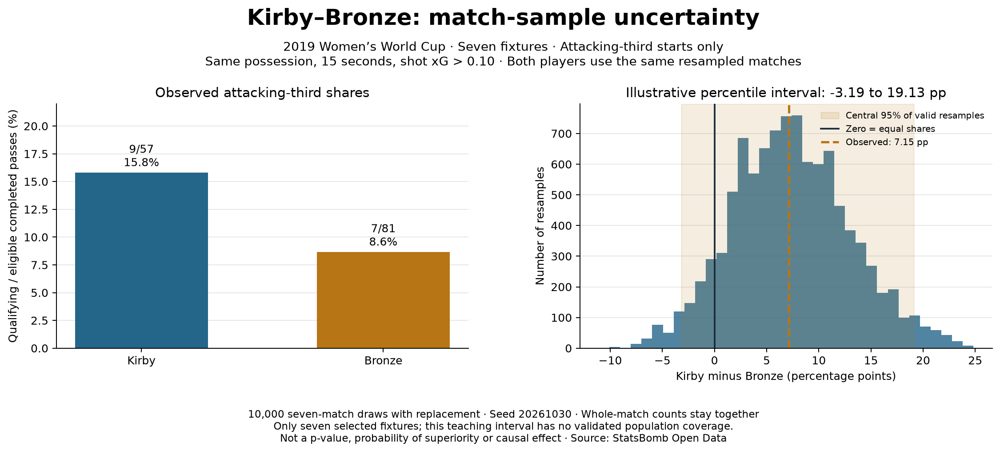

Football analyst training · Project lesson 21
One comparison is not the whole picture.
Last time, Kirby's attacking-third share was 15.8% and Bronze's was 8.6%. Now ask: how much does that comparison move when the mix of observed matches changes?
1. Resample matches
Imagine seven match cards. Draw a card, record it, put it back, then draw again until you have seven cards. A match can appear twice; another can be absent. Repeat this procedure 10,000 times. This is a bootstrap: reuse the observed data to study variation, not to create new evidence.
Use the same seven drawn cards for both players. Keep each match's pass counts together because events in one attack and match share context. Resampling individual passes would ignore that grouping.
2. Recalculate the comparison
For each draw, add up each player's qualifying passes and eligible completed passes. Divide those pooled totals. Then calculate:
difference = kirby_share - bronze_sharePositive means Kirby's sample share is higher; negative means Bronze's is higher. Zero means equal shares. A gap of 15.8% − 8.6% is about 7.2 percentage points, not a relative increase of 7.2%.

3. Read the histogram
Each bar counts how many resampled differences fall in that range. The dashed line is the observed +7.15-point gap. The solid zero line marks equal shares. The shaded range covers the central 95% of valid resampled differences: about −3.19 to +19.13 points.
This illustrative percentile interval crosses zero. That does not prove equality or tell us a player's probability of being better. Only seven selected fixtures were available; opponents and conditions differ. The interval's population coverage has not been validated.
4. Follow the code in Spyder
Open 21_match_bootstrap_uncertainty.py. The central draw is:
indices = [rng.randrange(len(rows)) for _ in rows]
first = pooled_share(rows, indices, 0)
second = pooled_share(rows, indices, 1)rows contains seven fixture summaries. The list draws seven indices with replacement. Both players receive the same indices. pooled_share sums numerator and denominator before dividing, including repeated fixture counts.
A no-pass fixture contributes zero numerator and denominator, not a measured zero percentage. A draw with no eligible exposure for either player cannot produce a comparison; we count such draws explicitly. This run had none.
5. Practical analyst task
Write a short coach-facing conclusion containing the observed gap, the resampling variation, and one limit. Then explain why increasing the loop to 100,000 draws does not give you more real matches.
Check your reasoning
More draws make the simulation of these same seven fixtures more precise. They do not add opponents, seasons or independent evidence. A defensible conclusion keeps Kirby's higher observed share while acknowledging unstable broader inference. More representative match data is needed before a general recommendation.
Ask your teacher to explain any function or review your conclusion. The implementation was prepared with assistance; your independent explanation is the next learning milestone.
Previous: starting-third context · Bootstrap reference · Research report